La commande CMD, qui signifie "Command Prompt" en anglais, est une interface en ligne de commande présente dans les systèmes d'exploitation Windows. C'est un outil qui permet aux utilisateurs d'interagir avec le système d'exploitation en utilisant des commandes textuelles.
Voici quelques informations importantes concernant CMD :
Pour ouvrir CMD sur Windows, vous pouvez appuyer sur la touche Windows + R, taper "cmd" et appuyer sur Entrée, ou rechercher "Invite de commandes" dans le menu Démarrer. Il existe également une variante graphique appelée PowerShell qui offre plus de fonctionnalités et de puissance.
Les exercices presenter si dessous sont disponibles sur le site : "sql.sh".
Veillez a bien DL les deux DB, afin de les ouvrirs et d'effectuer les exercices.
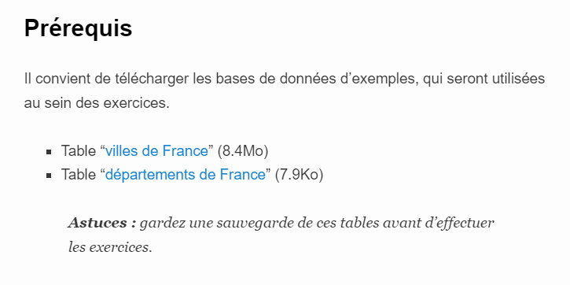Si cette etape vous est inconnue je vous renvoie a la page "WAMP" pour toutes les informations nécéssaires.
Nous allons selectionner les COLONNES "ville_nom" et "ville_population" qui se trouve ou ? Dans la TABLE "villes_france_free" quelles WHERE ? "ville_population_2012" DECROISSANTS LIMITER aux 10 premiers.
Nous allons selectionner les COLONNES "ville_nom" et "ville_surface" qui se trouve ou ? Dans la TABLE "villes_france_free" quelles WHERE ? "ville_surface" LIMITER aux 50 premiers resultats.
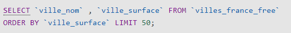Nous allons selectionner TOUT = (*) Ou ça ? Dans la TABLE "villes_france_free" ou ? Dans la COLONNE "ville_code_postal" WHERE quelles conditions ? COMMENCE PAR 97 = ('97%').
WHEREest un mot clef qui doit etre suivis de conditions
Nous allons selectionner les COLONNES "ville_nom","ville_population " et "departement_code" Ou ça ? Dans LES TABLES "villes_france_free" et "departement" WHERE quelles conditions ? "ville_departement" = "departement_code" dans L'ORDRE "ville_population_2012" DECROISSANT LIMITER aux 10 premiers resultats.
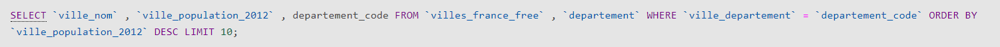Nous allons selectionner les COLONNES "departement_nom","departement_code", COMPTER le nombre de ville_id dans quelle TABLES ? "villes_france_free","departement" WHERE quelles conditions ? "departement_code" = "ville_departement" GROUPER PAR "departement_code".
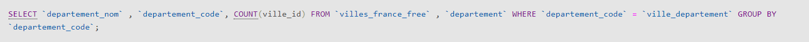Nous pouvons optimiser cette requête afain quelle soit plus clair :
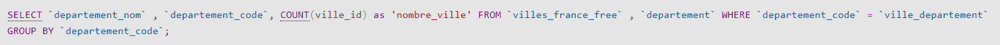Dans cette requête nous pouvons constater qu'une variable 'nombre_ville' a etais créé, dans laquelle nous ajouterons la valeur calculer "ville_id".
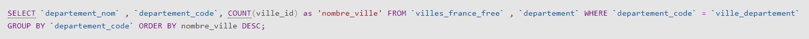Voila a quoi ressemble une organisation d'ecriture des requetes bien plus claire.
Nous allons selectionner les COLONNES "departement_nom","departement_code, on lui demande ensuite de calculer le total de "ville_surface" que l'on met dans une nouvelle variable appeler 'superficie', tout ca ce trouve dans les TABLES "villes_france_free","departement" WHERE quelles ? "departement_code" = "ville_departement" GROUPER PAR "departement_code" dans L'ORDRE DECROISSANT LIMITER A 10 dans la variable 'superficie'.
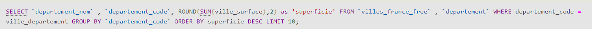Nous allons selectionner tout et demander de tout COMPTER dans quelle TABLE ? "villes_france_free" Quelle LIGNE ? "ville_nom" ajout d'une contrainte : LIKE qui signifie "preference" 'Saint-%' (Qui commence par 'Saint-').
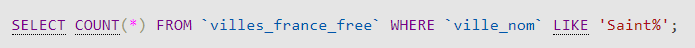Nous allons slectionner la COLONNE "ville_nom" de COMPTER le total et de la mettre dans une VARIABLE appeler 'cpt'. Dans quelle TABLE ? "villes_france_free" GOUPER PAR "ville_nom", HAVING > 1 : seulement ceux qui ont plusieurs fois le meme nom. Donc plus grand que 1. Dans L'ORDRE DECROISSANT.
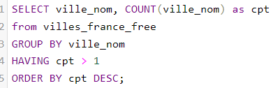Exemple :
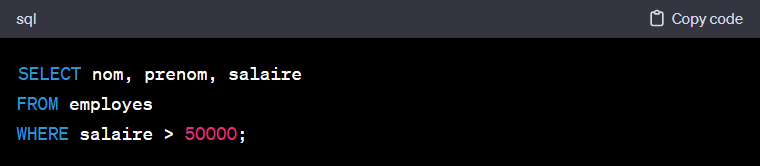A placer juste aprés le "SELECT"
Supposons que nous avons une table "commandes" avec les colonnes "id_client", "date_commande" et "montant". Nous voulons obtenir le montant total des commandes pour chaque client. Nous pouvons utiliser la clause 'GROUP BY'de la manière suivante :
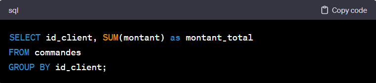Dans cet exemple, la clause 'GROUP BY id_client'egroupe les résultats par la colonne "id_client". La fonction d'agrégation 'SUM(montant)' est alors appliquée à chaque groupe pour calculer le montant total des commandes pour chaque client.
Nous pouvons ajouter une "DESC" a la fin de la condition afin de trier par ordre decroissant, nous pouvons aussi ajouter plusieurs colonnes.
ORDER BY prix DESC, titre, durée;
Cette ligne de code auras pour but de triée dans l'ordre des prix mais si le meme prix est trouver pour deux films alors il les trieras par nom et si deux films on le meme nom il les trieras par la durée.
Le second champs s'applique uniquements aux lignes qui ont des valeurs identiques pour le premier champ. Ainsi de suite si l'on rajoute encore des champs.
!!! UN "ORDER BY" SE MET TOUJOURS EN FIN DE REQUETE !!!
Exemple d'utilisation : SELECT * FROM Films WHERE codefilm IN(1, 2, 6)
Il va nous donner seulement les lignes de la table Films auxquel correspond le codefilm 1, 2 et 6.
Une condition permet de choisir les lignes que l'on affiche.
Une condition s'effectue avec l'instruction WHERE
Pour qu'une ligne soit affichée, elle doit respecter tous les critères de restriction indiqués avec un AND
Par contre avec un OR il suffit de respecter au moins 1 des critères.
Lorsque le critère de restriction contient une chaine de caractère ou une date, celle-ci doivent être entourées de "celle-ci"
Lorsque l'on souhaite afficher toutes les lignes dont la valeur d'un champ entre dans intervalle, on utilise l'instruction BETWEEN
L'instruction LIKE permet de comparer deux chaines de caractères. Dans ce cadre, % remplace 0 ou plusieurs caractères alor que _ en remplace forcement 1 seul.
Pour comparer la valeur d'un champ a une liste de valeur on utilise l'instruction IN
"=" Egal
"<" Inferiereur à
">" Superieur à
"<=" Inferieur ou egal à
">=" Superieur ou egal à
"<> ou !=" Diferrent de